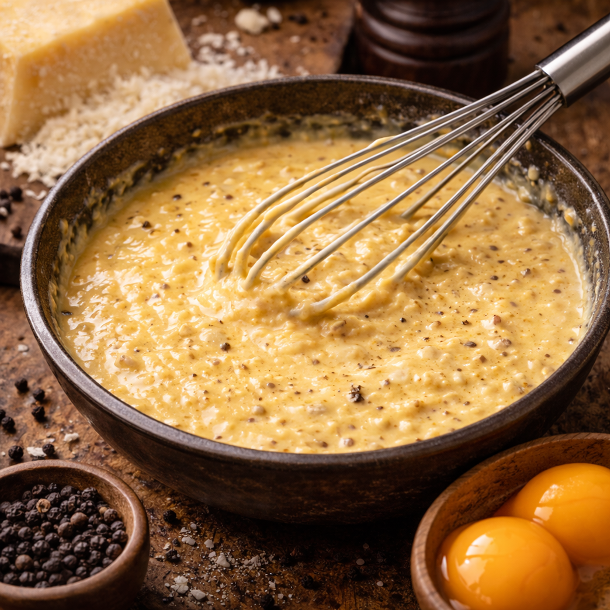

Recetas tradicionales
Elaboraciones auténticas que respetan las técnicas originales.
Italia es reconocida mundialmente por su tradición culinaria. Desde la clásica pizza napolitana hasta la cremosa pasta carbonara, cada receta refleja siglos de historia, cultura y pasión por la cocina.
Explorar recetasUna selección cuidada de recetas tradicionales italianas, desarrolladas con enfoque en autenticidad, calidad y contexto cultural.
Elaboraciones auténticas que respetan las técnicas originales.

Productos frescos y materias primas seleccionadas.

Cada receta contextualizada dentro de su tradición histórica.
Descubre las incorporaciones más recientes a nuestro recetario italiano.
Masa artesanal horneada en horno de leña.
Ver detalle
Clásico romano con huevo y pecorino.
Ver detalle
Postre tradicional con café y mascarpone.
Ver detalle
Arroz cremoso preparado lentamente con caldo.
Ver detalle